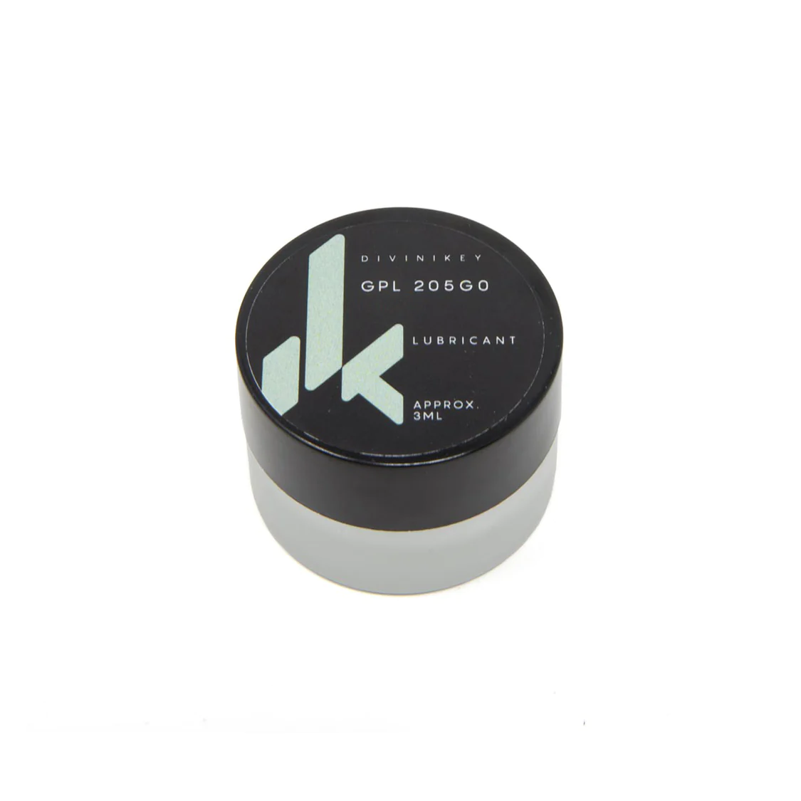
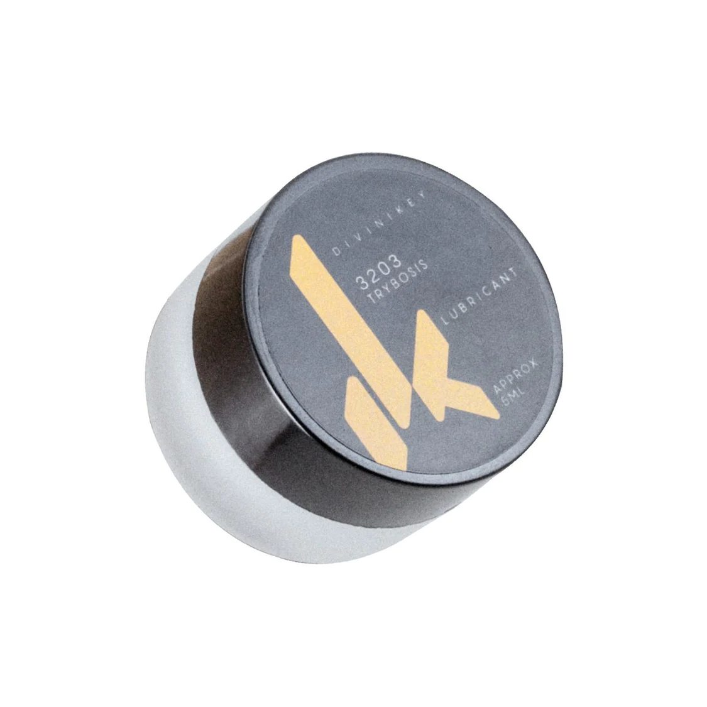
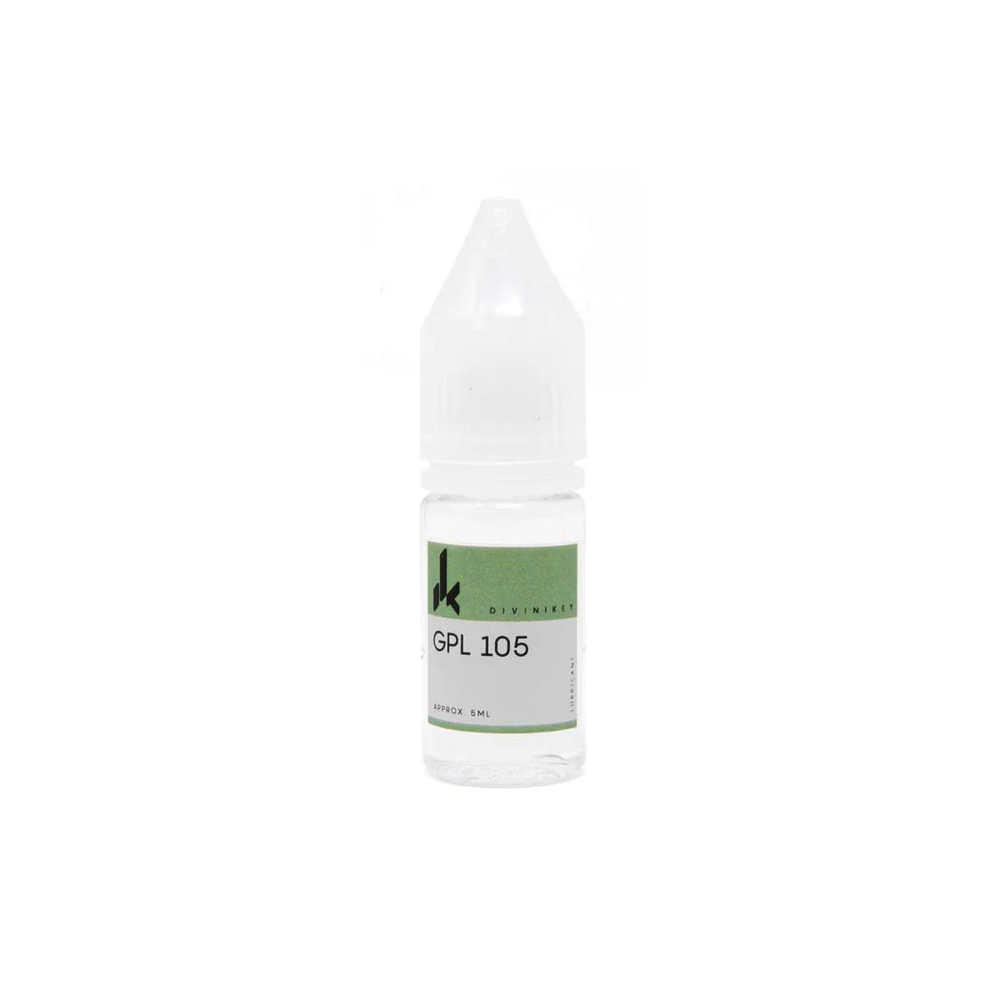
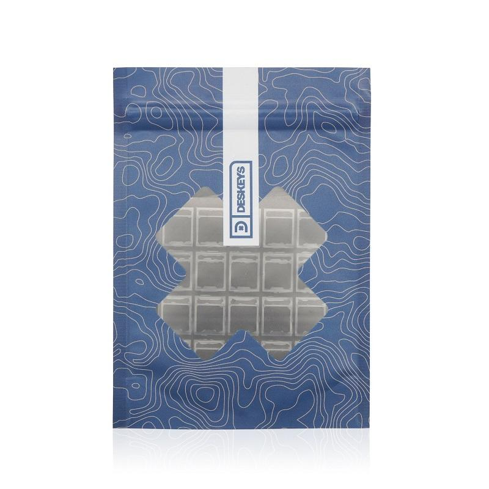
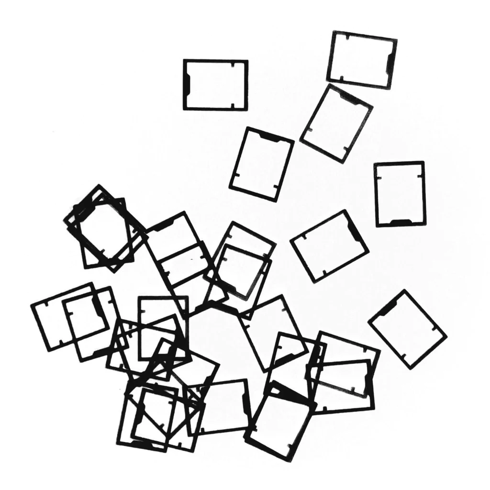

There is a variety of smaller products that can help enhance the switch experience, like lube to smooth the travel of the switch, oil for springs to lessen potential spring noise, or films and gaskets that help stabilize the housing and can create a deeper soundprofile.

Krytox 205g0
- Grease lubricant
- 3mL container
- Good for linear switches
- Glass container
- Price: kr 91,00

Tribosys 3203
- Grease lubricant
- 3mL container
- Good for tactile switches
- Glass container
- Price: kr 91,00

Krytox 105 Oil
- Oil lubricant
- 5mL
- For springs
- Plastic bottle
- Price: kr 105,00 per bottle

Deskeys Switch Film
- Teflon Material
- 0,3mm Thickness
- Utilized for MX type switches
- Includes 110 per pack
- Price: kr 80,00 per pack

TX Switch Film
- Polycarbonate Material
- 0.15mm Thickness
- Utilized for MX type switches
- Includes 110 per pack
- Price: kr 63,00 per pack